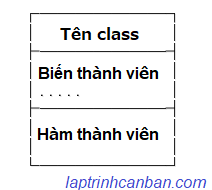
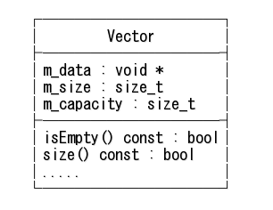
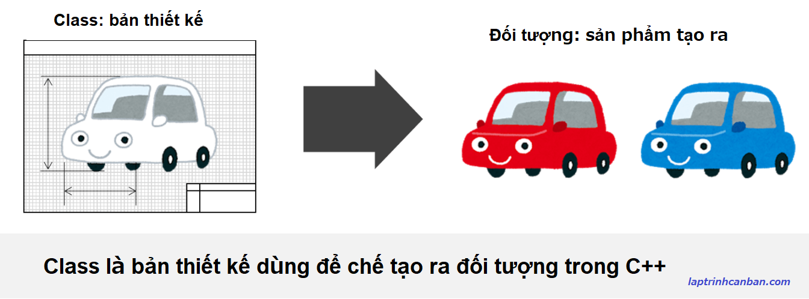

Cùm tìm hiểu về class trong C++ hay còn có tên tiếng Việt là lớp trong C++. Bạn sẽ biết khái niệm class trong C++ là gì, cách khai báo class, cũng như 2 cách sử dụng class trong C++ sau bài học này.
Class trong C++ là gì
Class trong C++ hay còn gọi là lớp trong C++ là các bản thiết kế ra các đối tượng dùng để đóng gói và xử lý dữ liệu trong lập trình hướng đối tượng C++.
Cấu trúc class trong C++ bao gồm 2 thành phần là biến thành viên (member variables) và hàm thành viên (member function) như sau:

Trong đó biến thành viên là các biến sử dụng trong nội bộ class có tác dụng lưu trữ thông tin chính là thuộc tính của đối tượng tạo ra từ class. Biến thành viên còn được gọi là field trong class c++.
Còn hàm thành viên là các hàm có tác dụng định nghĩa các xử lý có thể được sử dụng cho các đối tượng được tạo ra từ class. Hàm thành viên còn được gọi là method hay còn gọi là phương thức trong class C+++.
Ví dụ cụ thể, class Vector trong C++ được tạo bởi 2 thành phần được định nghĩa như sau:

- Xem thêm: Hàm thành viên trong C++
- Xem thêm: Biến thành viên trong C++
Ví dụ về class trong C++
Nói đơn giản thì class là bản thiết kế để chế tạo ra đối tượng trong C++.
Để dễ hiểu hơn thì chúng ta có thể liên tưởng tới chiếc xe yêu quý của mình. Một chiếc xe chính là một đối tượng, với các thuộc tính như màu sắc, kích thước, và phương thức xử lý là tiến, phanh, lùi v.v..
Khi đó, class chính là bản thiết kế ra đối tượng, chính là chiếc xe đó.

Chúng ta có thể hiểu class giống như bản thiết kế chiếc xe đơn giản như sau:
bản_thiết_kế Xe { màu_sắc; kích_cỡ; tăng_tốc{ ... }; bật_đèn{ ... }; lùi { ... }; }
Khi đó, các thông tin màu_sắc và kích_cỡ được gọi là biến thành viên, còn các xử lý như tăng_tốc, bật_đèn và lùi chính là hàm thành viên của class.
Khai báo class trong C++
Để khai báo class (lớp) trong C++, chúng ta sẽ cần làm 2 việc, đó là định nghĩa class và tạo hàm thành viên trong class.
Trong đó việc định nghĩa class sẽ giúp khai báo tên class cũng như tên các biến thành viên và hàm thành viên có trong nó. Còn việc tạo hàm thành viên trong class sẽ giúp mô ta các xử lý cụ thể của từng hàm thành viên.
Thông thường thì 2 công việc này được viết riêng vào 2 file với đuôi file khác nhau lần lượt là classname.h và classname.cpp, tuy nhiên trong các chương trình nhỏ thì chúng ta có thể viết chúng trong cùng một file .cpp.
Lưu ý cách viết chia file dưới đây thường được sử dụng trong các dự án lớn, khi cần có sự phân chia công việc và hợp tác nhóm. Đối với các chương trình nhỏ thì chỉ cần dùng cách viết gộp thứ 2 là đủ.
Định nghĩa class trong C++ | class.h
Để định nghĩa class trong C++ chúng ta viết từ khóa class, sau đó đến tên class, rồi khai báo các thành viên của nó bên trong cặp dấu ngoặc nhọn {}, rồi lưu vào một file có tên classname.h như sau:
class classname
{
//Khai báo tên biến và hàm thành viên
};
Chúng ta có thể lược bỏ đi phần khai báo các thành viên trong class và tạo ra một class trống. Class này không có gì trong nó cả và chỉ có tác dụng giữ chỗ mà thôi.
Còn dưới đây là một ví dụ về khai báo class trong C++. Chúng ta sẽ lưu nội dung này vào trong fileclass1.cpp như sau:
|
Các từ khóa private và public ở trên được gọi là Access modifier trong C++. Chúng được dùng để chỉ định việc có thể truy cập các biến hay hàm thành viên từ bên ngoài class hay không, và chúng ta sẽ cùng làm rõ hơn trong bài Access modifier trong C++.
Khi định nghĩa class trong C++, lưu ý là các hàm thành viên sẽ chỉ được khai báo tên mà thôi. Còn các xử lý cụ thể trong chúng thế nào sẽ được miêu tả ở phần tiếp theo của khai báo class trong C++ dưới đây.
Tạo hàm thành viên trong class | class.cpp
Sau khi đã khai báo tên các hàm thành viên như ở phần trên, chúng ta sẽ viết các xử lý cụ thể của các hàm thành viên đó, và lưu vào một file có tên là classname.cpp với cú pháp như sau:
#include “classname.h”
type classname::funcname()
{
//Các xử lý trong hàm funcname
};
Trong đó:
# include "classname.h"có tác dụng import file định nghĩa class đã tạotypelà kiểu dữ liệu trả về của hàm thành viênfuncnameclassnamevàfuncnamelần lượt là tên class và tên hàm thành viên.- Lưu ý giữa classname và funcname chúng ta sử dụng toán tử
::- toán tử phân giải phạm vi (Scope resolution operator) nhằm biểu thị phạm vi của hàm thành viên đó thuộc class nào.
Còn các xử lý viết trong hàm thì sẽ tương tự như cách chúng ta viết một hàm trong C++, bạn có thể tham khảo thêm tài chuyên đề hàm trong C++.
Ví dụ, chúng ta tạo hàm thành viên của class1 và lưu vào file class1.cpp với nội dung như sau:
|
Với 2 hàm thành viên ở trên thì do không trả về kết quả từ hàm, nên kiểu của hàm sẽ là void. Tuy nhiên thì chúng dùng biến name đã được khai báo trong phần định nghĩa class ở trên.
Khai báo gộp class trong C++
Như đã nói ở trên, thì trong các chương trình lớn và phức tạp, chúng ta cần thiết phải chia việc khai báo class ra thành 2 phần và lưu trong 2 file khác nhau như trên, để dễ quản lý cũng như thuận tiện trong chia sẻ công việc nhóm.
Tuy nhiên đối với các chương trình nhỏ, chúng ta cũng hoàn toàn có thể viết gộp các công đoạn trên vào trong cùng một file.
Khi đó, chúng ta sẽ không cần phải include file classname.h nữa mà sẽ viết toàn bộ nội dung file này gộp vào file classname.cpp.
Ví dụ, chúng ta viết gộp cả 2 phần của class1 ở trên vào trong file class1.cpp như sau:
|
Cách sử dụng class trong C++
Tùy thuộc vào việc có tạo đối tượng (instance) từ class hay không mà chúng ta có 2 phương pháp sử dụng class trong C++.
Instance trong C++ là gì?
Instance trong C++ hay còn gọi là thực thể, là một đối tượng cụ thể được tạo ra từ class.
Ví dụ cụ thể, từ một bản vẽ class, chúng ta sẽ tạo ra đối tượng là chiếc xe. Nhưng tại các thời điểm khác nhau, chúng ta sẽ tạo ra những chiếc xe khác nhau, và mỗi chiếc xe cụ thể đó sẽ được gọi là một instance của class.
Nói cách khác, đối tượng là một khái niệm, còn instance chính là thực thể, là thứ được tạo ra từ class.
Tuy nhiên thì chúng ta gọi là instance là instance hay đối tượng đều được cả.
Sử dụng class trong C++ bằng cách tạo instance
Để sử dụng class trong C++ bằng cách tạo ra instance, chúng ta có thể sử dụng cách tạo trực tiếp hoặc dùng toán tử new các cú pháp sau đây:
classname ins_name;
OR
type *ins_name = new classname();
Trong đó type là kiểu dữ liệu, và ins_name là tên của instance cần tạo ra từ classname. Lưu ý chúng ta cần viết dấu hoa thị trước tên biến *ins_name với ý nghĩa tạo ra con trỏ chỉ đến địa chỉ mà instance được lưu trong bộ nhớ.
Phương pháp này có ý nghĩa, chúng ta tạo ra một instance cụ thể từ class, rồi dùng các phương thức và thuộc tính trong class thông qua instance đó.
Ví dụ, chúng ta tạo ra 2 instance khác nhau trên từ class1 đã khai báo ở phần trên như sau:
|
Sử dụng class trong C++ không tạo instance
Ở phần trên, chúng ta đã truy cập và sử dụng các hàm thành viên trong class thông qua một instance được tạo ra từ class.
Và instance đó sẽ được thừa hưởng tất cả các thuộc tính lẫn phương thức của class nguồn tạo ra nó.
Nhưng thực thế trong chương trình, không phải lúc nào chúng ta cũng cần sử dụng tất cả các chức năng có trong một class, mà có thể chỉ dùng một phần nhỏ của class đó.
Khi đó, thay vì tạo một instance với đầy đủ chức năng của class để rồi chỉ sử dụng một phần rất nhỏ của nó, thì chúng ta có thể truy cập trực tiếp vào trong class và sử dụng chức năng, các hàm thành viên mà mình muốn. Lưu ý là chỉ có các biến hay hàm thành viên thuộc kiểu public mới có thể được truy cập từ bên ngoài class bằng phương pháp này mà thôi.
Với cách sử dụng class trong C++ không tạo instance này, chúng ta sẽ sử dụng trực tiếp các hàm thành viên trong class thông qua việc truy cập từ bên ngoài vào trong class đó.
Do đó, để tránh xung đột tên của hàm hay tên biến ở trong và ngoài một class, chúng ta cần thêm từ khóa static vào đầu tên hàm thành viên hoặc biến thành viên, với ý nghĩa rằng các hàm và biến này chỉ thuộc phạm vi bên trong class mà thôi. Khi đó, giả sử nếu có một hàm hoặc biến bên ngoài class có trùng tên chăng nữa thì chương trình cũng sẽ phân biệt được chúng với nhau.
Lưu ý đối với phương pháp này, do không tạo ra instance nên chúng ta cần phải khởi tạo giá trị của biến thành viên để có thể sử dụng như sau:
Ví dụ cụ thể:
|
Còn đối với các chương trình không sử dụng tới biến thành viên trong đó thì chúng ta có thể lược bỏ đi phần này như sau:
|
Tổng kết
Trên đây Kiyoshi đã hướng dẫn bạn về class trong C++ rồi. Để nắm rõ nội dung bài học hơn, bạn hãy thực hành viết lại các ví dụ của ngày hôm nay nhé.
Và hãy cùng tìm hiểu những kiến thức sâu hơn về C++ trong các bài học tiếp theo.
HOME>> lập trình c++ cơ bản dành cho người mới học lập trình>>28. hướng đối tượng trong c++